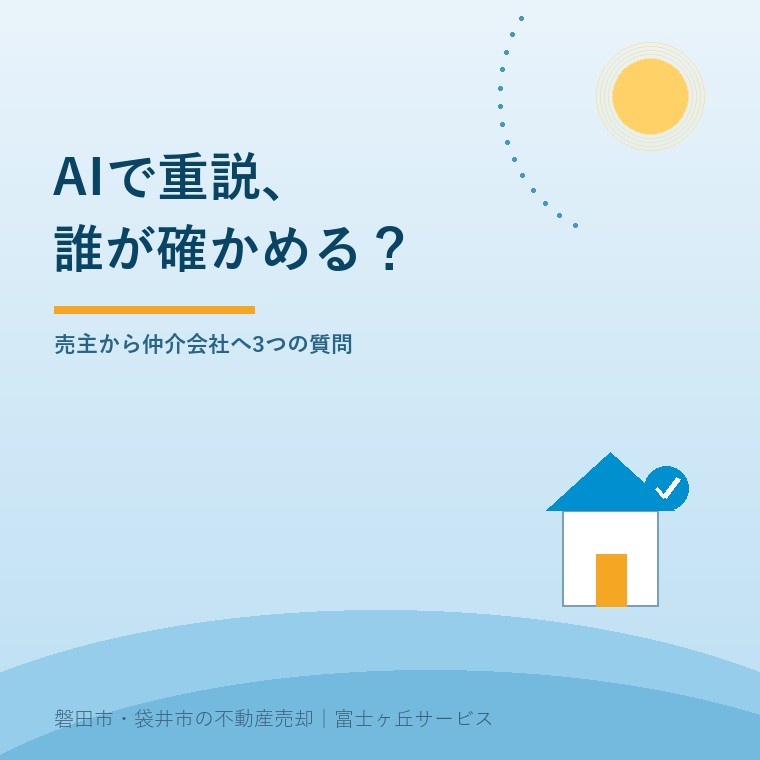
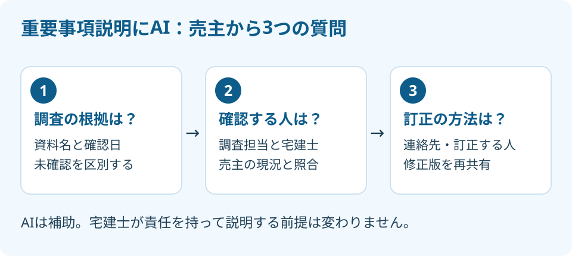

重要事項説明にAI、売主が聞く3つの確認
2026年9月29日｜カテゴリ：売却実務・媒介

この記事の要点
AIで重要事項説明の資料を作るそうだけど、誰が確かめるの？
重要事項説明の資料作成にAIを使う場合も、宅建士が責任を持って説明する前提は変わりません。売主は仲介会社へ、調査根拠、確認担当者、訂正方法の3点を尋ね、伝えた現況と書面を照合してください。磐田市・袋井市・森町では、介護施設の運営から不動産事業を始めた富士ヶ丘サービスのような地域密着の会社に、資料整理から相談する選択肢があります。
大石浩之（磐田市／不動産業）です。仲介会社から「重要事項説明の資料はAIで作ります」と言われたとき、売主が聞くべきなのはソフトの名前だけではありません。自分の土地と家について、誰が何を調べ、間違いをどう直すかです。
私もAIの利用には前向きです。ただ、文章が早く整うことと、不動産の調査が終わることは同じではありません。本記事では2026年9月29日に確認した国土交通省の資料を基に、売主から仲介会社へ尋ねる3つの質問を整理します。
3月31日の通知はAIへの責任移転ではない
国土交通省の2026年3月31日付通知、国不動第614号は、重要事項説明を宅建士が責任を持って行う前提を示しています。宅地建物取引業法第35条に基づく説明は、購入者等の利益を保護するためのものです。AIを使えば人の確認を省ける、という通知ではありません。
通知の正式名は「重要事項説明に関する業務におけるデジタル・AI等の技術を用いた補助ツールの取扱いについて」です。購入者等の利益保護を前提に、適切な補助ツールで宅建士の負担軽減を図る考え方を示しています。3月31日は通知の発出日であり、本記事ではウェブ掲載日とは扱いません。
重要事項説明は、取引の前提となる権利や制限などを購入者等へ説明する手続きです。売主向けの記事でも、売主がAIの回答を承認すれば説明責任が済む、と読み替えてはいけません。売主の役割は、知っている現況を伝え、資料との食い違いを確認することです。
私は、資料の整理や転記の負担を減らせる方向は歓迎します。国土交通省の資料2も、クラウド化や電子署名を使った取引支援の効果を紹介しています。関係者が同じ資料を見られれば、別々の版を持つことによる手戻りを減らす助けになります。
その上で注文したいのは、デジタル化の成果をすべてAIの成果と呼ばないことです。資料2は生成AIを使うサービスについて、効果などの検証がさらに必要としています。国が個々のAI製品の正確さを保証した、と受け取れる売り方はしてほしくありません。
確認1・どの資料で調べたのか
AIで作った説明資料について最初に聞くのは、記載の根拠にした資料と確認日です。登記情報、自治体で確認した内容、現地で見た状態、売主から聞いた情報を分けると、どこに質問を戻せばよいかが分かります。以下は通知を踏まえた私の実務上の提案です。
| 売主からの質問 | 回答で確かめたいこと |
|---|---|
| 何を根拠に書きましたか | 資料名、確認日、確認した窓口や場所 |
| 誰が確かめましたか | 調査担当と説明する宅建士の役割 |
| 違っていたらどう直しますか | 連絡先、訂正担当、修正版の共有方法 |
例えば道路に関する記載なら、地図の表示を読んだだけなのか、担当窓口などで取扱いを確認したのかを聞きます。画面に線が描かれていることだけで、個別の建築や通行の条件まで確定したとは考えません。説明書の項目と、調査した資料を結び付けてもらいます。
売主の古い書類も役立ちますが、取得した時点を確認します。以前の売買資料に載っているというだけで、今回も同じとは扱いません。「過去の資料」「今回確認済み」「まだ未確認」を区別してもらうと、家族も追加で探す書類を選べます。
私は、確認できない部分がある書面より、未確認を隠して全部埋まっている書面の方を警戒します。空欄を見栄えよく埋めるためのAIなら使い方が違います。分からないことは分からないと残し、誰が調べるかを書く方が、売主にも買主にも役立ちます。

確認2・誰が現況と照合するのか
資料作成にAIを使う仲介会社には、調査担当者と説明する宅建士を確認します。「会社で見ています」だけでは、売主が訂正を伝える相手が分かりません。誰が資料を確認し、現地や売主の申告と照合するかを聞きます。
私は、売主の話を受け取った人と書類を仕上げる人が違うなら、引継ぎの方法も知りたいと考えます。雨漏りを伝えたメールがあるのに、別の担当者が作った書面では触れられていない。そうした食い違いを防ぐには、受け取った情報をどこに反映したか確認できる形が必要です。これは想定例で、実際の相談事例ではありません。
家族が長く住んでいた家でも、すべての履歴を知っているわけではありません。「親から聞いた」「書類で確認した」「自分では分からない」を区別して渡します。売主の記憶をAIが断定文に整え、そのまま確定情報として扱うことは避けたいところです。
AIで書けたことと、調査が終わったことは別だ。責任まで丸投げはできない。私はこう考えます。便利な道具を使うなら、浮いた時間を現地と資料の照合に戻してほしい。速く出せる書面より、売主の質問に根拠を示して答えられる担当者を評価します。
会社そのものの確認は、不動産会社の免許を確認する方法も参考になります。ただし、会社の免許を確認したことと、今回の物件を担当する宅建士や調査内容が分かったことは別です。会社と担当者の両方を確認します。
確認3・間違いをどう訂正して渡すのか
説明資料の誤りを見つけた場合に備え、仲介会社へ訂正の連絡先と修正版の受取り方を聞きます。売主が指摘した内容を誰が検討し、どの書面へ反映するかが分かれば、口頭で伝えたまま終わることを防げます。
私なら、該当するページと項目を示し、「記載」「売主が把握している状態」「根拠資料」の三つを並べて送ります。単に「違います」では調べ直す場所が広すぎます。写真や修繕の書類があるなら添え、情報の確かさが違う場合は、その違いも伝えます。
修正版には、いつ更新されたものかが分かる表示を依頼します。メールの添付名だけでは似た版が残るので、仲介会社と最終確認用の版を一つ決めます。買主側など関係者にも同じ版が届いたか、担当者に確認するところまでを訂正の流れにします。
私は、指摘一件で契約を止めるべきかは、内容を見ずには決められません。表記の修正なのか、取引条件に関わる未確認事項なのかで対応が違うからです。説明や契約の予定が近いなら、予定を守ることだけを優先せず、担当宅建士に対応を相談します。
オンラインで説明を受けることと、AIに説明を任せることも別です。IT重説などで来店の負担を減らす方法を使う場合も、訂正箇所を同じ画面や書面で確認できる準備は残ります。通信の便利さで、確認した内容まで曖昧にしないことです。
磐田・袋井の売主が今日渡す現況メモ
磐田市・袋井市の実家を売る家族は、把握している修繕、設備の不調、隣地とのやり取りを一枚に整理し、仲介会社へ渡すところから始められます。AIの製品を比較する前に、その家について何が分かっているかをそろえます。
遠方の家族なら、現地へ行く人と書類を保管する人も書き分けます。写真を撮る人に、日付と撮影場所を添えてもらうだけでも照合しやすくなります。これは売主に調査を丸投げする話ではなく、家族の手元にある情報を仲介会社へ正確に渡す準備です。
設備の不調などは、重要事項説明書だけでなく別の書面に反映する場合もあります。どの書面に載るかを担当者に確認し、契約不適合責任と売主の説明も合わせて読んでください。AIを使ったことだけで売主の責任が消える、と自己判断せず、契約条件は専門家に確認を。
富士ヶ丘サービスは、介護と不動産を一体で相談できる地域の窓口です。磐田・袋井で家族が困らない売却を考えるからこそ、私は次の質問を歓迎します。道具を使う側が説明できることが、安心して任せてもらう条件だと考えます。
- この記載は、どの資料をいつ確認したものですか。
- 現況と照合し、説明する宅建士は誰ですか。
- 食い違いがあったら、誰に伝え、どう訂正しますか。
よくある質問
個別の状況を確認してから、次の手続きを決めてください。
- AIを使う仲介会社は避けた方がいいですか？
- AIを使うという理由だけで避ける必要はありません。国土交通省は、購入者等の利益保護を前提に、適切な補助ツールによる宅建士の負担軽減を期待しています。確認したいのは、資料の出典、照合する担当者、誤りが見つかったときの訂正方法です。ツール名より、質問に対して根拠を示す運用があるかで判断します。
- 売主も重要事項説明書を全部調査し直す必要がありますか？
- 売主が仲介会社や宅建士の調査を丸ごと代行するという話ではありません。売主が知る修繕、雨漏り、設備の不調、隣地とのやり取りを伝え、記載との食い違いを確認します。知らないことは不明と区別してください。調査範囲や説明の個別判断は担当宅建士に、権利関係などは必要に応じて専門家に確認を。
- 説明前日に間違いを見つけたらどうしますか？
- 該当ページと項目、正しいと思う情報、その根拠を仲介会社へ送り、訂正する担当者と再確認の予定を尋ねます。修正済みの書面が関係者へ届いたかも確認してください。急いでいるから口頭で済ませると決めず、説明や契約の日程を含めて相談します。必要な対応の個別判断は、担当宅建士などの専門家に確認を。

この記事を書いた人：大石浩之（磐田市／不動産業・宅地建物取引士）
富士ヶ丘サービス株式会社。介護施設の運営から不動産事業を始め、磐田市・袋井市・森町で、介護と相続、実家の売却を一体で相談できる窓口を設けています。家族が困らない売却のため、資料と現地の条件を一件ずつ整理します。著者プロフィール
本記事は2026年9月29日時点の公開情報と筆者の意見です。制度・数値・手続きは変更されることがあります。重要事項説明・税務・登記・相続などの個別判断は、担当宅建士・税理士・司法書士・弁護士などの専門家に確認を。